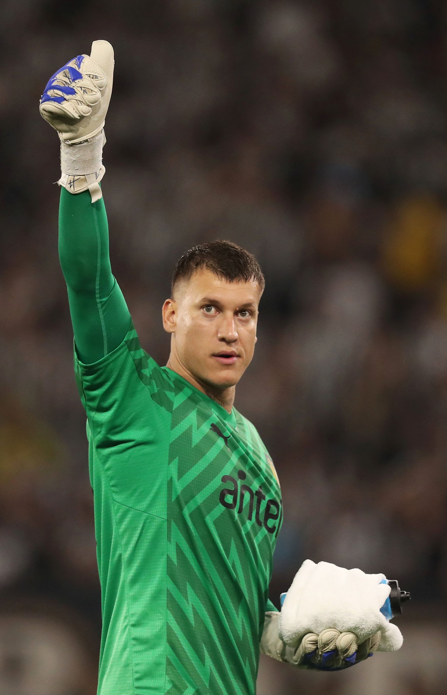

Nuevamente el hombre a cargo de este plantel es Diego Aguirre, con el peso de saber que la ultima vez que Peñarol habia superado la fase de grupos de este torneo fue en aquella campaña de 2011, parecia que el era otra vez el indicado para sacar a flote de vuelta al gigante dormido. Trece largos años tuvieron que pasar para que Peñarol volviera a jugar instancias finales de una copa libertadores,con una columna vertebral compuesta por Washington Aguerre, Guzman Rodriguez, Damian Garcia, Leo Fernandez y Maximiliano Silvera, fue peleando partido a partido y fue creciendo y demostrando que era cosa seria, primera prueba de eso, tercera fecha de fase de grupos, 60 minutos e iba perdiendo 3 a 0 en Brasil con Atletico Mineiro, con errores propios y sin encontrar respuesta, todos (y me incluyo) pensamos “ ya esta, otra vergüenza en Brasil" pero para sorpresa de muchos Peñarol con el tercer gol mejora, acorrala a Mineiro y se pone 3 a 2, lo cual no alcansaria, pero si sorprendería como termina ese partido el equipo brasileño, incomodo, nervioso, desesperado por que termine el partido, no seria un resultado positivo esa noche, pero si dejaria claro que Peñarol pretendía pelear con quien viniera por llegar lejos. Luego de 13 años Peñarol accede a octavos de final, le toca una parada que siempre fue complicada, Bolivia, esta prueba es superada tranquilamente con un 4 a 0 a The Strongest en Uruguay y cayendo 1 a 0 en Bolivia pero sin pasar muchos sobresaltos, siguiente parada, nuevamente Brasil, esta vez Flamengo, con un detalle importante, invirtió cerca de 50 millones de Euros para reforzar el plantel con muchísima calidad, una inversión contra la que Peñarol y su plantel no pudieron ni estar cerca de competir económicamente hablando,la cual no sirvió de mucho, ya que Peñarol logra una victoria histórica en brasil por 1 a 0 y en Uruguay lograría un 0 a 0 que lo clasificaría a semifinales de la competencia, Rival? Botafogo (Quien terminaría ganando la competencia) Un partido que se dividio en 4 tiempos de 45 minuttos, lamentablemente en 3 estuvo mas que a la altura, pero en uno, recibio 5 goles, en un segundo tiempo oscuro en Brasil, 3 en 10 minutos, intento reaccionar pero esta vez lo golpearon y tumbaron, para un 5 a 0 que por lo menos a mi, me dolio muchisimo, En uruguay intento, estuvo a la altura,pero con pelotas rozando el palo, un arquero del equipo brasileño concentrado y un error propio de Aguerre, Peñarol solo logro el 3 a 1, dejando la serie 6 a 3 , lo que provocaria la eliminacion del torneo.
Washington Aguerre
Guzman Rodriguez
Javier Mendez
Pedro Milans
Maximiliano Olivera

Damian Garcia
Eduardo Darias
Javier Cabrera
Jaime Baez
Leo Fernandez
Maximiliano Silvera